IRSend
Из базы IrCode Finder: IRBIS → «Promethean Interactive Board», №500202. Нажмите на строку, чтобы скопировать код Pronto для другого приложения.
Встроенный ИК-порт телефона браузер использовать не может — для него нет веб-интерфейса. Поэтому нужен внешний излучатель: в разъём наушников или по Wi-Fi.
Скачать Android-приложение — работает со встроенным ИК-портом и с USB-C ИК-передатчиком.